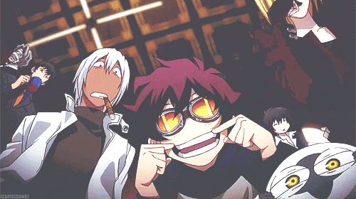

<!DOCTYPE html>
<html lang="en">
    <head>
        <meta charset="UTF-8">
        <title>Main Page</title>
        <link rel="stylesheet" href="ssA10.css">
    </head>
</html>

<main>
    <body> 
        <div id="wrapping">
            <header>
                <h1><a href="MainPage.html">Welcome to the Website!</a></h1>
            </header>

            <nav>
                <ul>
                    <li><a href="MainPage.html">Main Page</a></li>
                    <li><a href="SubPage.html">Video</a></li>
                    <li><a href="SubPage2.html">Index</a></li>
                </ul>
            </nav>

            <div id="BodyP">
            

            <h2>About Me</h2>
            <p>My name is Pacey J. Evans and I am a Junior at Illinois State University. I like listening to music, playing games, making games, traveling, and hanging out with my friends. I currently work at the Watterson Dining Hall as a Student Manager and I really enjoy my time there! I am also a Creative Technologies major and plan on becoming a Game Designer when I graduate college.</p>

            <audio controls autobuffer autoplay >
                <source src="Pokemon Black and White  Rap  HipHop  Trap   Remix    Undella Town  Prod Fulmo.mp3" type="audio/mpeg">
              </audio>

            <p>The audio above this line of text is one of the many songs that I would listen to while I'm working on something. Whether it's working on a game I gotta finish or other homework. It's pretty relaxing and it's a Hip-Hop remix of a song that I already like. Another thing is that I used to also make music before I came to college. It was pretty fun at times and I would sometimes go back and play my guitar for a bit, just so I could have some nostaglia. When I came into college though, I learned that making games kinda made me feel the same thing. It helped me clear my head of the problems that I already had to deal with and helped me enter another world without such problems in my head. It also reminded me of some shows that I would watch from time to time. Speaking of shows, I like to watch some anime as well. One of my favorite is Blood Blockade Battlefront. It's the gif thats right next to the text!</p>
        </div>

            <footer>
                
            </footer>
        </div>
    </body>
</main>